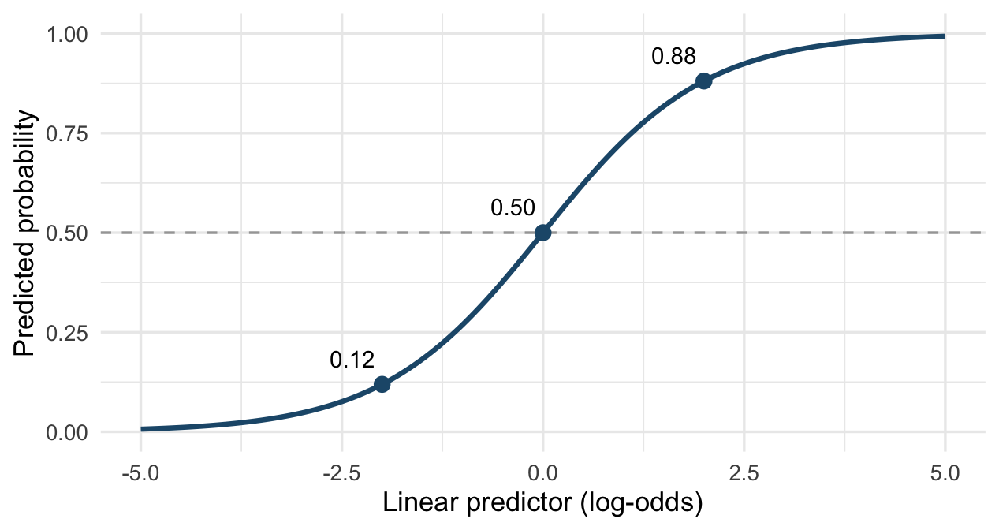
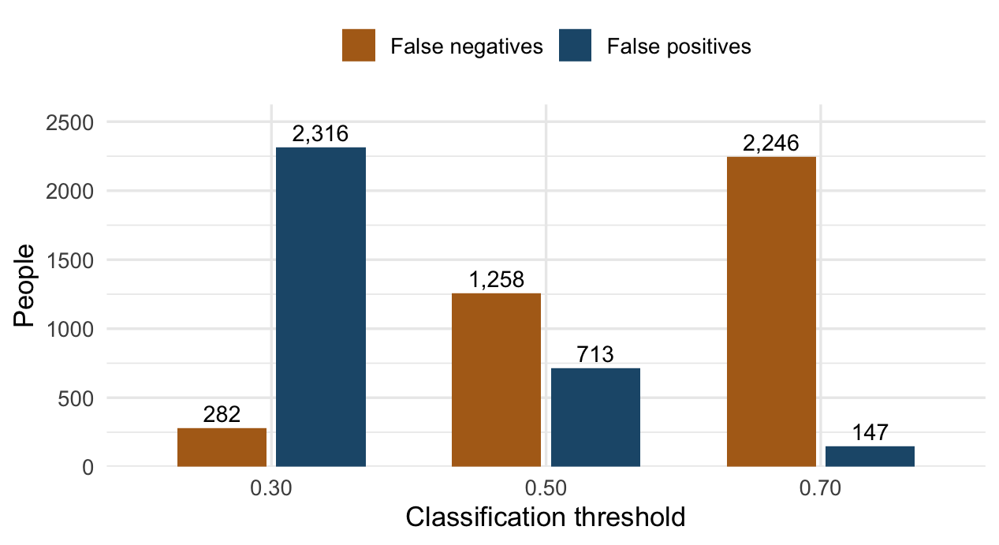

Week 10: Geographic Cross-Validation and Logistic Regression
Testing a burglary model on unseen districts, interpreting odds ratios, and choosing a classification threshold.
What We Did
We asked two different questions. Can a burglary model trained in some police districts predict counts in a district it has never seen? And when a model estimates a person’s probability of rearrest, how does that probability become a decision?
The first exercise changes how we test a count model. The second changes the unit and outcome: one person, one observed 0 or 1. A threshold then converts an estimated probability into a label. Moving the threshold does not refit the model or change what happened to anyone.
Key Concepts
| Task | One row | Outcome | Model output |
|---|---|---|---|
| House-price prediction | House | Sale price | Expected price in dollars (OLS) |
| Burglary prediction | Grid cell | Recorded incident count | Expected count (Poisson with log link) |
| Two-year rearrest | Person | Recorded rearrest: yes/no | Probability of recorded rearrest (logistic) |
Notes
1. What a geographic fold holds out
Randomly assigning individual grid cells to folds often puts a test cell next to several training cells. The cells may share environmental conditions, burglary patterns, and nearly identical distances to last year’s hotspot. Good results on random folds can therefore overstate performance when the real task is transfer to a new district. This is dependence between nearby observations; it need not mean that someone literally copied the test label into a predictor.
In leave-one-district-out CV, an entire district becomes the test fold. Fit a new Poisson model on the other districts, predict counts for the held-out cells, and repeat until each district has served as the test district once. This reduces geographic mixing but does not guarantee independence across district boundaries. A future-year forecast requires a time holdout as well.
# Starting objects from the burglary exercise: one row per cell in fishnet,
# and police district polygons in the same projected CRS.
cell_district <- sf::st_centroid(fishnet) |>
sf::st_join(dplyr::select(police_districts, district = dist_num)) |>
sf::st_drop_geometry() |>
dplyr::select(cell_id, district)
# A centroid usually resolves cells crossing a district boundary.
# Investigate duplicate matches (boundary point / overlapping polygons).
stopifnot(!anyDuplicated(cell_district$cell_id))
cells <- dplyr::left_join(fishnet, cell_district, by = "cell_id")
sum(is.na(cells$district)) # check exclusions before filtering
cells <- dplyr::filter(cells, !is.na(district)) |> sf::st_drop_geometry()
cv_results <- purrr::map_dfr(unique(cells$district), function(d) {
train <- dplyr::filter(cells, district != d)
test <- dplyr::filter(cells, district == d)
fit <- glm(burglaries ~ cars_cnt + log_light_nn1 + log_graffiti_nn3 +
loop_mi + dist_hotspot, family = poisson(), data = train)
pred <- predict(fit, newdata = test, type = "response")
data.frame(district = d, n_cells = nrow(test),
mae = mean(abs(test$burglaries - pred)))
})For district \(d\), \(\mathrm{MAE}_d=\sum_{i\in d}|y_i-\hat y_i|/n_d\). An MAE of 0.8 would mean a miss of 0.8 recorded incidents per cell on average, in either direction. Join the scores back to the polygons to see where the model struggles. Read MAE alongside the number of cells: one unusual cell can move the average in a small fold. An average over districts gives each district equal weight; an average over all test cells weights districts by their cell counts. The lecture supplies the mapping code but no numerical district ranking or held-out comparison with KDE.
2. What the Broward County outcome measures
The second exercise uses ProPublica’s Broward County COMPAS analysis data. The lecture uses screenings from 2013–14 and a two-year outcome. After filtering, 2,809 of 6,172 people had a recorded rearrest (45.5%). A new arrest is an administrative record, not proof of a new offense. Prior records also reflect earlier policing and justice-system contact.
The classroom regression uses age, prior count, a male indicator, a felony-charge indicator, and a total of three juvenile-record counts. It is a new model fitted to the public data, not the proprietary COMPAS scoring algorithm. Omitting race as a predictor does not establish that features, outcomes, or error rates are free from bias.
library(dplyr)
u <- paste0("https://raw.githubusercontent.com/propublica/compas-analysis/",
"master/compas-scores-two-years.csv")
# The public CSV repeats priors_count; keep the first name and suffix duplicates.
compas <- readr::read_csv(u, name_repair = make.unique, show_col_types = FALSE) |>
filter(between(days_b_screening_arrest, -30, 30),
is_recid != -1, c_charge_degree != "O", score_text != "N/A") |>
mutate(male = as.integer(sex == "Male"),
felony = as.integer(c_charge_degree == "F"),
juv_total = juv_fel_count + juv_misd_count + juv_other_count)
recid_fit <- glm(two_year_recid ~ age + priors_count + male + felony + juv_total,
family = binomial(link = "logit"), data = compas)3. Probability, odds, and log-odds
If 80 of 100 people experience an event, its probability is \(80/100=0.8\), but its odds are \(80/20=4\), or four events for each non-event. The denominator changes. In this lecture, “positive” means that a rearrest was recorded.
\[ o=\frac{p}{1-p},\qquad p=\frac{o}{1+o},\qquad \eta=\log(o),\qquad p=\frac{1}{1+e^{-\eta}}. \]
| Probability | Odds | Log-odds (natural log) |
|---|---|---|
| 0.10 | 1/9 | −2.197 |
| 0.50 | 1 | 0 |
| 0.80 | 4 | 1.386 |
| 0.90 | 9 | 2.197 |
Probability 0.455 gives odds around 0.835: about 84 recorded rearrests per 100 people without a rearrest, not 84 per 100 people overall. Complementary probabilities have reciprocal odds and opposite log-odds.
4. A line on one scale and a curve on another
With a binary outcome, an unconstrained OLS line can predict a probability above 1 or below 0. Logistic regression puts the linear predictor on an unrestricted scale:
\[ \log\left(\frac{p_i}{1-p_i}\right)=\beta_0+\beta_1x_{i1}+\cdots=\eta_i. \]
The inverse logit maps any finite \(\eta_i\) into \((0,1)\). The predicted probability is steepest as a function of \(\eta\) near \(p=0.5\) and flatter near either end. An individual outcome is still 0 or 1: a predicted probability of 0.78 does not mean a person was “0.78 rearrested.” The binomial model describes the variation in those binary outcomes. Maximum likelihood chooses coefficients that give the observed sequence of zeros and ones the greatest likelihood. Ordinary OLS \(R^2\) is not the objective being optimized.
predict(recid_fit, type = "link") # eta; the default; may be negative
predict(recid_fit, type = "response") # p; a probability
exp(coef(recid_fit)) # coefficient multipliers on the oddsFor Week 9’s Poisson model, response-scale predictions are expected counts. For Week 10’s binomial model, they are probabilities. The same R argument requests the outcome scale of the particular model. R documentation: predict.glm
5. Three readings of one coefficient
For one additional prior record, holding the other predictors fixed:
- Log-odds: add approximately 0.160.
- Odds: multiply by \(e^{0.160}\approx1.17\), roughly 17% higher odds.
- Probability: start at the person’s original probability. If \(r\) is the odds ratio, the new probability is \(p'=rp/(1-p+rp)\). There is no single percentage-point change that applies to everyone.
| Predictor change (others fixed) | Rounded log-odds coefficient | Approximate odds ratio |
|---|---|---|
| One more year of age | −0.044 | 0.96 |
| One more prior | 0.160 | 1.17 |
| Male indicator: 0 to 1 | 0.328 | 1.39 |
| Felony-charge indicator: 0 to 1 | 0.229 | 1.26 |
| One more juvenile record | 0.135 | 1.14 |
For age, OR 0.96 means about 4% lower odds per additional year, not four percentage points lower probability. These are adjusted associations, not estimates of what would happen if someone intervened on a predictor.
The slides compare two male profiles, both with a felony charge, no juvenile records, and a change from zero to one prior. At age 22 the displayed probability moves from 0.488 to 0.528 (+4.0 percentage points); at age 50 it moves from 0.218 to 0.246 (+2.8 points). A refit of the linked CSV gives 0.490 to 0.530 and 0.221 to 0.249 respectively. The distinction does not depend on the small discrepancy: the same odds multiplier moves probability further near the steep middle of the curve.
6. A threshold turns a probability into a label
At threshold \(t\), flag a person if \(\hat p\ge t\). Someone at 0.40 is flagged at 0.30 but not at 0.50. No model parameter, probability, or observed outcome changed. The label changed because the decision rule changed. A threshold of 0.50 has no special claim to being optimal, even when the event rate is close to one half.
| Predicted label | Actual event: yes | Actual event: no |
|---|---|---|
| Positive / flagged | TP | FP |
| Negative / not flagged | FN | TN |
| Measure | Formula | Among whom? |
|---|---|---|
| Sensitivity / recall | TP / (TP + FN) | Among actual positives, how many did we flag? |
| Specificity | TN / (TN + FP) | Among actual negatives, how many did we leave unflagged? |
| Precision | TP / (TP + FP) | Among those flagged, how many actually had the event? |
| Accuracy | (TP + TN) / N | Among everyone, how many labels matched? |
7. Two exercises, two different populations
Quarantine exercise, 40 cards. A red dot represents illness, and a star identifies the severe variant. There are 16 positives and 24 negatives. Results below use the same cards and scores at every threshold.
| Threshold | TP | FP | FN | TN | Sensitivity | Specificity | Precision | Accuracy | Stars caught |
|---|---|---|---|---|---|---|---|---|---|
| .30 | 14 | 13 | 2 | 11 | .875 | .458 | .519 | .625 | 3/4 |
| .50 | 10 | 6 | 6 | 18 | .625 | .750 | .625 | .700 | 2/4 |
| .70 | 7 | 2 | 9 | 22 | .438 | .917 | .778 | .725 | 1/4 |
At .70, accuracy is highest among the three displayed thresholds, but the rule misses nine sick people and three of the four severe cases. At .50, precision and sensitivity are both .625 only because FP and FN happen to be equal. At .30 their denominators differ: \(14/16\) versus \(14/27\).
Broward exercise, 6,172 people. The following counts reproduce the lecture’s fitted-sample example. They describe the model’s labels against observed rearrests, not a held-out estimate or a forecast of the effect of detention.
| Threshold | Flagged | TP | FP | FN | TN | Sensitivity | Specificity |
|---|---|---|---|---|---|---|---|
| .30 | 4,843 | 2,527 | 2,316 | 282 | 1,047 | .90 | .31 |
| .50 | 2,264 | 1,551 | 713 | 1,258 | 2,650 | .55 | .79 |
| .70 | 710 | 563 | 147 | 2,246 | 3,216 | .20 | .96 |
Compare .30 with .70: raising the threshold avoids 2,169 false positives but adds 1,964 false negatives. At .70, specificity .96 means 96% of people without a recorded rearrest were left unflagged. It does not mean that 96% of flagged people were rearrested; the latter fraction is \(563/710\approx79.3\%\).

Proving R Works
This calculation starts with one lecture row rather than individual records. Keeping the denominators visible helps distinguish a false alarm from a missed event.
tp <- 1551; fp <- 713; fn <- 1258; tn <- 2650
round(c(sensitivity = tp/(tp+fn), specificity = tn/(tn+fp),
precision = tp/(tp+fp), accuracy = (tp+tn)/(tp+fp+fn+tn)), 3)sensitivity specificity precision accuracy
0.552 0.788 0.685 0.681 # In a binomial GLM, adding one coefficient to the log-odds translates back as:
round(plogis(qlogis(c(0.488, 0.218)) + 0.160), 3)[1] 0.528 0.247To get the same orientation from individual predictions in R:
p_hat <- predict(recid_fit, type = "response")
table(predicted = as.integer(p_hat >= 0.50), actual = compas$two_year_recid)
# R prints 0 before 1: find the row/column labels before reading any cell.Reflection
Choosing a threshold amounts to choosing which mistakes an institution is more willing to make. A false positive in a detention program can cost someone their freedom. A false positive in a voluntary support program may instead mean offering services, though resources and access still matter. The lecture contrasts a higher threshold (or questioning the use of the model) for a punitive decision with a lower threshold for offering support. Neither the fitted probabilities nor overall accuracy can decide whether a program is justified.
Questions I Still Have
- Would the burglary model rank differently against a historical baseline on the same held-out districts?
- How would error rates change on a different cohort, and who would bear the errors at the proposed cutoff?
Sources and Scope
MUSA 5080, Geographic CV + Logistic Regression I, November 6, 2026; ProPublica data and methodology. The figures use the inverse-logit formula and the threshold counts from the slides. The original slide image files were not included. The slides preview the ROC curve for next week; they do not report a Week 10 ROC/AUC result.